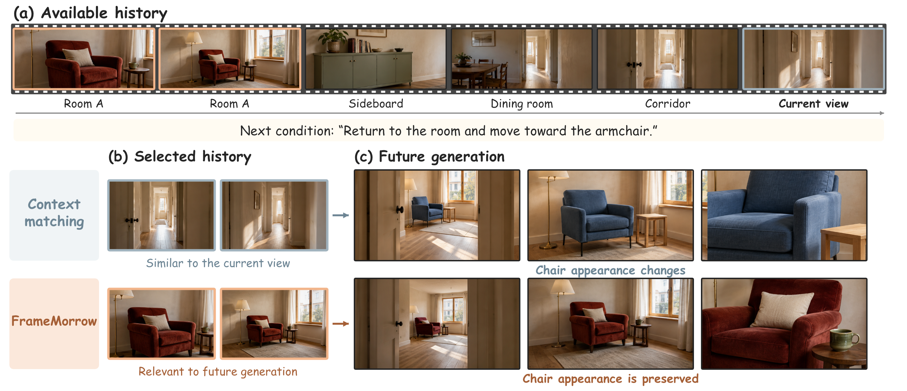
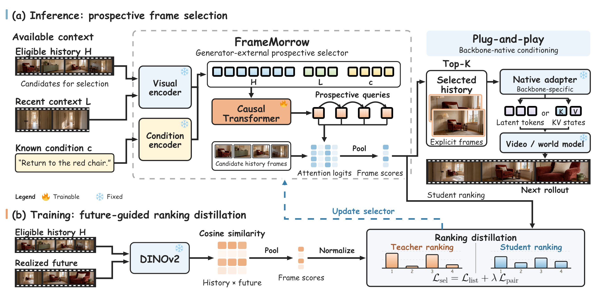

Anticipate information needs
Prospective tokens summarize what may matter next, using available history, recent context, and the generation condition.
A memory for what comes next
Future-Guided Frame Selection with Prospective Tokens
for Long-Horizon Video Generation
Predict what future generation needs.
Retrieve the history that matters.
See the difference
Native generation alongside
generation with FrameMorrow.
Follow the subject and scene as the video progresses. Both videos use Causal Forcing, with historical frame selection added on the right.
Synchronized playbackThe intuition
Select history for future needs.
A corridor may match the current view. But returning to a room requires remembering its earlier appearance. FrameMorrow learns to retrieve historical evidence for the upcoming generation.

A compact future proxy
No full future rollout required.
Prospective tokens summarize what may matter next, using available history, recent context, and the generation condition.
The tokens score historical candidates. A small set of selected frames carries relevant visual evidence forward.
Selected frames enter each backbone through its own conditioning interface. The selector stays outside the generator.

One idea, multiple settings
Evaluated across long-video generation, interactive generation, and action-conditioned world models.